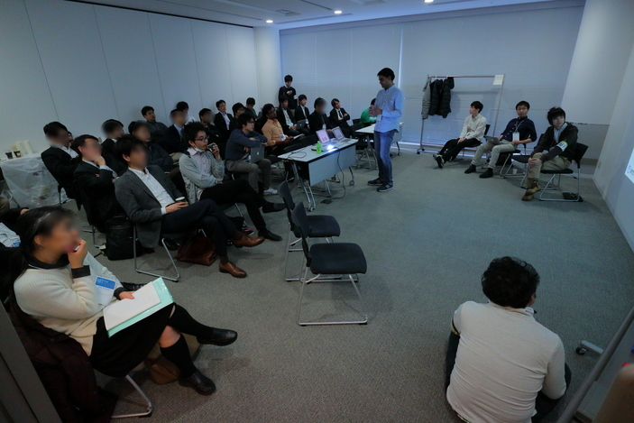
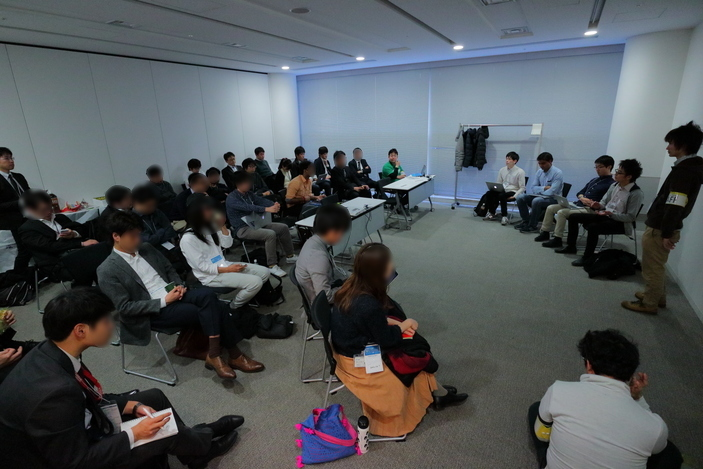
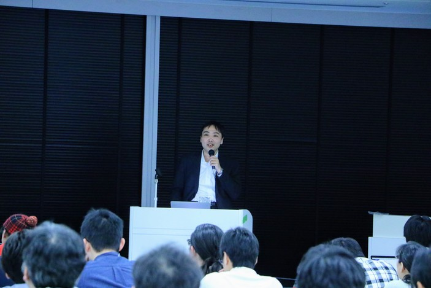
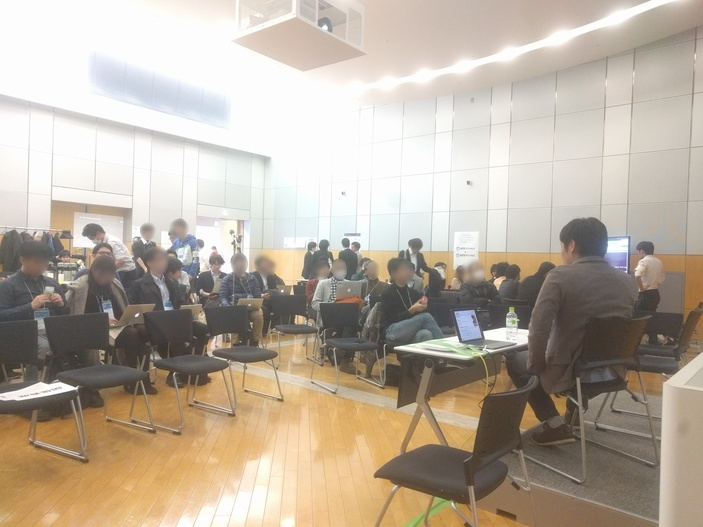
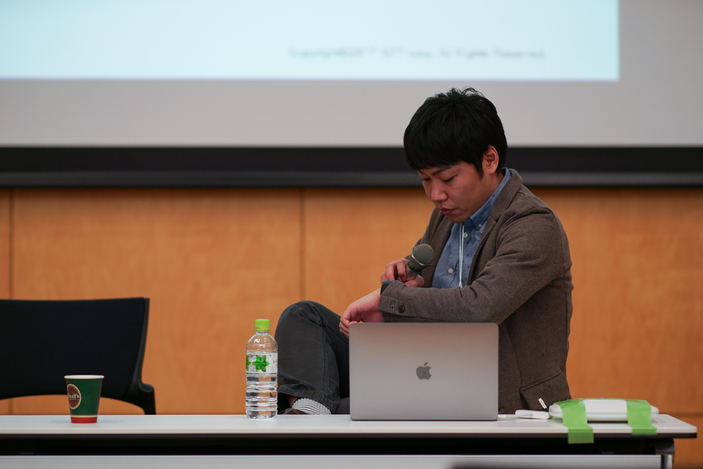
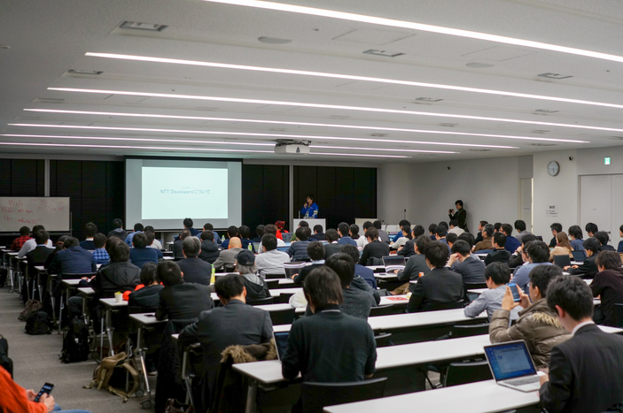

NTT Tech Conferenceについて
ABOUTNTT Tech Conferenceは、NTTグループのソフトウェアエンジニアたちが一堂に会し、NTTグループ内外のエンジニアたちと技術交流を行うためのカンファレンスです。NTTグループ内には各種OSSのコミッタ、メンテナ、コントリビュータをはじめとしたソフトウェアエンジニアや、各社の様々な案件でシステム開発を行うエンジニアがおり、本イベントではそれらのエンジニアがもつノウハウや悩みをNTTグループ内外のエンジニアと共有・議論することで、参加者がもっとおもしろいエンジニアになることを目的としています。
タイムテーブル
TIME TABLE-
-
NTT Database Summit - PostgreSQL 10: What to look for?
Amit Langote - NTT OSSセンタ

発表資料 -
-
NTT Database Summit - Free Discussion Time
藤井 雅雄 - NTTデータ
Amit Langote - NTT OSSセンタ
大山真実 - NTT OSSセンタ
澤田雅彦 - NTT OSSセンタ
 -
15:20-15:40
シェル芸で学ぶDevOps実践入門
石井久治 - 日本電信電話株式会社
発表資料
-
Apache BigtopによるDockerコンテナ上へのHadoopソフトウェアスタックの導入
関堅吾 - NTTデータ
-
Deconstruction of Serverless and Blockchain
林田貴宏 - NTTコムウェア

発表資料OSSコミッタの生活とその必要性
市原裕史 - 日本電信電話株式会社
発表資料 -
OSSコミッタの生活とその必要性
市原裕史 - 日本電信電話株式会社
発表資料 -
17:20-17:50
Closing Keynote



-
-
Docker コミュニティ近況
TechConf開催日のころにはDocker 1.13がリリースされている見込みです． また，新ランタイムcontainerdのコミュニティ移管や，分散ストレージInfinitのソースコード公開も2017年の早期に予定されています．こうした近況をお伝えするほか，Dockerへのパッチの投げ方，バグレポートの仕方もご案内します．
須田瑛大(@_AkihiroSuda_) - 日本電信電話株式会社
Dockerメンテナ@SIC
発表資料
-
Building secure Docker containers
Docker containers uses various OS primitives like cgroup, namespace and secomp, SElinux etc for isolating and securing containers. By default docker containers may not be secure enough to run at your server. This talk will help to understand the security concerns in containers and how it can be avoided.
Kunal Kushwaha(@kunalkushwaha) - 日本電信電話株式会社
Kunal works for NTT OSSC for Linux Containers community projects. He is also co-organizer of Docker Tokyo Meetups and gives talk in Container related events at Tokyo.
発表資料
-
-
分散処理技術のスタンダードHadoopやSparkの本当のところを教えます！
Apache Hadoopが登場して10年が経ち、今や分散処理技術として重要なものになりました。Hadoopによって大量データの蓄積や分散処理による高速化の恩恵を受けてきました。そして、単純なログ集計から分析・機械学習といったより高度な活用を推進しています。高度な利用ではApache Sparkが欠かせない技術です。Sparkを利用することで、分析や機械学習を容易に扱えるようになり、これまで結果を得るために必要だった時間を大幅に削減することができるようになりました。本セッションでは、HadoopやSparkを利用する上での基礎的な仕組み、抑えておくべきポイントといった本当のところをお伝えします！
鯵坂明(@ajis_ka) - NTTデータ
Akira Ajisaka is a software engineer working at NTT DATA, Japan. He belongs to OSS Professional Services team and deploys and operates Hadoop clusters for customers. He sometimes troubleshoots them by investigating source code and creating a patch. He is an Apache Hadoop committer/PMC member and he involves in various components of Hadoop for improving usability and supportability. He wrote blog posts about activities of the development of Apache Hadoop annually.
-
Apache BigtopによるDockerコンテナ上へのHadoopソフトウェアスタックの導入
Hadoop やその周辺プロダクトを試してみたい人や、手っ取り早く動作確認するための環境が欲しい人向けに、Apache Bigtop を使って Docker コンテナ上に Hadoop ソフトウェアスタックを簡単に構築する方法を紹介します。以下の記事±αの内容を話します。
http://qiita.com/sekikn/items/18954e9b302c38eb5b55
関堅吾(@sekikn39) - NTTデータ
OSS プロフェッショナルサービスという担当で Apache Hadoop のサポート業務に従事. Apache Yetus committer & PMC member. -
Deconstruction of Serverless and Blockchain
「Serverless」と「Blockchain」が注目されています．これらのテクノロジーを分解すると，その技術要素は多くの共通項を持ちます．コンテナ．分散．イベントドリブン．トランザクション．ワークフロー etc... ServerlessとBlockchainを分解し，組み合わせることで見えてくる新しい地平は何か．そして作成したデモシステムについてご紹介します．
林田貴宏 - NTTコムウェア
技術開発部門スペシャリスト．クラウドサービスやテストツール開発，Scrum，LeSSの取り組みを経て，現在Serverless分野に注力．
発表資料 -
ドコモのビッグデータ分析環境の開発と運用を内製でやってる話
NTTドコモのビッグデータ分析環境"IDAP"は、AWSの各種サービスを利用して内製で開発されています。 そこに至るまでの経緯と開発運用のスタイルについて紹介します。
伊吹勇郎 - NTTドコモ
NTTドコモサービスイノベーションビッグデータ担当所属。入社以来データ分析およびデータ分析環境の構築に従事。
-
-
NTT Database Summit - PostgreSQL 10: What to look for?
PostgreSQL 10 will be released sometime later this year. Beside the change in the policy of version numbering, there are number of significant features in the pipeline. As a development community member, I would like to highlight some of those features that have a good chance of being a part of this release - such as many new replication features, declarative partitioning, more FDW query push-down, enhanced parallelism and asynchronous execution capabilities, better statistics for query optimization, JIT-compiled expression evaluation, and many others. Most of the anticipated features in PostgreSQL 10 have been consistently requested by the wider developer community using PostgreSQL and their availability opens up the possibility of even widespread adoption of PostgreSQL.
発表資料
Amit Langote(@amitlan) - NTT OSSセンタ
PostgreSQL developer -
NTT Database Summit - Database Security for PCIDSS
国際的なセキュリティ標準である PCI DSS をベースに、データベースのセキュリティに関して、どのような観点での検討が必要なのかを考えます。これからセキュリティっぽいことを考えなければいけない皆様の一助となれば幸いです。 なお、 発表は入門的な内容ですが、当方はセキュリティの専門家ではないので、詳しい方々からの優しいアドバイスを頂きたいと思っています。セキュリティに関して一家言ある皆様のご参加もお待ちしております。
発表資料
大山真実(@ooyamams1987) - NTT OSSセンタ
2012年NTTデータ入社。OSSプロフェッショナルサービス配属。HadoopなどのOSS製品の検証・サポート業務を担当。2015年からNTT OSSセンタにてPostgreSQLの検証・サポート業務を担当中。
-
NTT Database Summit - Free Discussion Time
「PostgreSQL 10: What to look for?」「Database Security for PCIDSS」に関する疑問質問、PostgreSQLやその他データベースに関する疑問質問をきっかけにみんなでディスカッションしようという時間です。おやつタイムも兼ねてます。様々なバックグラウンドを持つ技術者が集まる良い機会ですので、お気軽にご参加、ご発言ください！
藤井雅雄(@fujii_masao) - NTTデータ
PostgreSQL committer
Amit Langote(@amitlan) - NTT OSSセンタ
PostgreSQL developer
大山真実(@ooyamams1987) - NTT OSSセンタ
2012年NTTデータ入社。OSSプロフェッショナルサービス配属。HadoopなどのOSS製品の検証・サポート業務を担当。2015年からNTT OSSセンタにてPostgreSQLの検証・サポート業務を担当中。
澤田雅彦(@sawada_masahiko) - NTT OSSセンタ
PostgreSQL技術サポートを行う傍ら、PostgreSQL開発者としてPostgreSQLコミュニティに参画し、PostgreSQL本体の開発にも従事。 -
シェル芸で学ぶDevOps実践入門
シェル芸とは、IT環境における各種計算・統計・テキスト処理等の課題解決に際し、１からプログラムを書き起こすのではなく、UNIX哲学に基づき、広く普及している既存コマンドの組み合わせによって、シェル上のワンライナーで即座に課題を解決してしまうテクニックのことです。 昨今 DevOps が話題になっていますが、オフィスの空調・椅子・キーボード・エディタ・ネットワーク接続に恵まれたDev(プログラマ)に対し、客先のデータセンタで寒さに震え、椅子もなく、キーボードも固く、エディタも選べず、時にオフラインでの作業を強いられるOps(インフラエンジニア)にとって、イザという時に頼れるのは己の知恵と勇気とcoreutilsだけという場面も珍しくありません。 このセッションでは、Software Design 2017年1月号に掲載されたシェル芸特集を題材に、明日から実践できるシェル芸の基礎をハンズオン形式で体感していただきます。
発表資料
石井久治(@hisaharu) - 日本電信電話株式会社
NTT SICにてDevOpsの普及啓蒙と実践を推進。日本唯一のシェルプログラミングコミュニティ「USP友の会」幹事
-
AWSのEC2 Container Service (ECS)とSpotFleetで新規ビジネスのトライアル
NTTソフトウェア社内の新規ビジネス開拓制度(戦略ビジネス特区)で、今冬トライアルが開始されるWebサービスをAWS上に構築しました。 EC2 Container Service (ECS)とSpotFleetを中心とした構成で、限られた時間の中でAWSの各種マネージドサービスも利用しましたので、その経験から得られたノウハウを、新規ビジネス開拓制度のご紹介も交えながら共有します。
須藤悠 - NTTソフトウェア
ソフトウェア生産技術センター Grails推進室 "Grails Advocate" / ソフト道場 AWSチーム。技術研修の講師や、社内の「困った」に対する技術支援をしています。だいたいピザとGrailsとAWSで生きています。
発表資料
-
ブロックチェーンの仕組みと動向(入門編)
ここ最近、いろいろな業界で話題になってきたブロックチェーン。 暗号、P2P、分散合意など面白い話題てんこ盛りなブロックチェーンについて、今回は、よく知らない人向けの入門的なお話をします。 ご存知 Bitcoin を題材にしてブロックチェーンの仕組みを解説した後、昨今つぎつぎと登場する新たなブロックチェーン技術の動向についても簡単に説明します。
発表資料
北條真史 - NTTデータ
ブロックチェーン技術のインフラ/ミドルレイヤを見てます。
-
あなたとBot、今すぐChatOps
NTTグループ内では、内製化やアジャイル開発の流れを受けて、Slackなどのチャットが利用されるようになりました。チャットのあるところにBotあり。ということで、各社の現場で使われているBotや、行なわれているChatOpsの事例を紹介します。その後、Botの開発で困ったこと、ChatOpsで上手くいった/いかなかったこと、こんなことをやりたいなどのディスカッションを行います。
発表資料1 発表資料2
堀内晨彦(@hico_horiuchi) - NTTコミュニケーションズ
Enterprise Cloud 2.0のベアメタルの開発をしています。うどん大修士卒で研究はクラウドWeb鯖の負荷監視とオートスケールアルゴリズム。バイトでRailsとReact。JANOGスタッフ、Sensu TalksとHubot×ChatOps勉強会主催。Docker、Emacs、Golang、Itamae好き。
-
NTT Developersが語る"DevOps"の今とこれから
昨今巷で流行りの"DevOps"。 そこもあそこも「これからはDevOpsだ！！」などと言ってますが、中には「DevOpsの定義を決めよう！」みたいな話や「え、これでDevOpsやってますとか言ってるの？」みたいな話しがちらほら・・・ 本セッションではNTTのDeveloperたちが”Dev”の視点から見ている”DevOps”の今と今後について語りあいます。 ※Operatorの方もお待ちしております
小倉真人(@Mahito) - NTTコミュニケーションズ
2014年にNTTコムウェアから現職へ本業は主夫。副業でIT芸人の活動として、OpenStackのコミュニティ活動をしつつコンテナやクラウドネイティブについても調べたり、勉強会を開いたりもしている。また、イベント対応、リクルータなども行っていてもはや何でも屋さん。
石井久治(@hisaharu) - 日本電信電話株式会社
NTT SICにてDevOpsの普及啓蒙と実践を推進。日本唯一のシェルプログラミングコミュニティ「USP友の会」幹事
-
-
NTTG新人座談会
NTTグループの新人(1~3年目程度を想定)を対象に、日々の業務や技術情報などを交換することを目的としたアンカンファレンスです。
萬治渉 - NTTソフトウェア
新人 of NTTソフトウェアOpenStack, Ansible, StackStorm, ...
堀内晨彦(@hico_horiuchi) - NTTコミュニケーションズ
Enterprise Cloud 2.0のベアメタルの開発をしています。うどん大修士卒で研究はクラウドWeb鯖の負荷監視とオートスケールアルゴリズム。バイトでRailsとReact。JANOGスタッフ、Sensu TalksとHubot×ChatOps勉強会主催。Docker、Emacs、Golang、Itamae好き。
-
OSSコミッタの生活とその必要性
このセッションでは、普段OSSプロジェクトにフルコミットしている自分の生活や仕事のスタイルについて共有します。また、そのような特殊な人材をなぜ会社は雇って維持しなければいけないのかについて紹介し、聴講者からの質問を交えてディスカッションを行います。
発表資料
市原裕史(@hichihara33) - 日本電信電話株式会社
NTT ソフトウェアイノベーションセンタ所属。OpenStack NeutronプロジェクトのCore Reviewerとして業務の90%以上はOSSコミュニティでの活動を行っている。
-
14:10 - 17:20
（招待プログラム）100G高速PCルーター Kamuee
Intel DPDKを利用してNTTComで内製開発しているルータソフトウェア Kamuee について展示。実機は田町5Fにあり、リモート接続でベンチマークのデモを見せる。
BGPフルルート52万経路を検索しつつ、128Bイーサネットフレームを145Gbps分転送可能（120Mpps程度）。開発中ではあるが、BGPセッションを張りフルルートを受けつつ同程度の転送性能を発揮できるようになった。CLIなどを紹介。
小原泰弘 - NTTコミュニケーションズ
GNU Zebra ospf6d 開発者。IEEE INFOCOM, USENIX FAST, ACM SIGCOMMに論文採録実績有り。北陸先端大助教、UCSCポスドクを経て2013年から現職（技術開発部）。FPGAアクセラレータを用いたスイッチレスネットワーク
C言語などからの高位合成処理エンジンの充実で、ソフトウェア開発者からもFPGA等を用いた高速信号処理が身近なものとなっている。
今回、FPGA実装技術養成の一環として、PCIe接続したFPGAボードとOpenCLベースのプログラミング環境を用い、MPLS-TPパケット伝送機能の一部の実装を行った。
デモではこれを用いてPC間をスイッチを用いずリング接続した構成を展示、得られた開発ノウハウ等を共有する。
保米本徹(@homelith)
岩下秀徳
- NTT ネットワークサービスシステム研究所
平素は長距離光通信を支える伝送装置の研究開発に従事し、高速信号処理に不可欠なディジタル回路実装技術、装置の高信頼性を保証するソフトエラー試験技術に取組んでいます。NFVにおいてセキュリティ機能をオートスケールするプロトタイプの紹介
ネットワーク機能仮想化（NFV）の世界では、キャリアネットワーク機能のオートヒーリングやオートスケーリングが自由自在にできるとの噂が囁かれています。
ですが、それは果たして真実でしょうか？ この展示では、オートスケーリングのプロトタイピングを通じて得られた課題や技術のポイントを紹介したいと思います。
中村哲朗
林裕平
大谷育生
木村明寛
- NTT ネットワークサービスシステム研究所
奥田兼三
- NTT ネットワーク基盤技術研究所
キャリアネットワークにおける仮想化に関する検討に従事しています。
E2D3のデモ展示
E2D3とは、表計算ソフトExcelのシート情報に対し、可視化ライブラリ「D3.js」の機能を適用することで、データドリブン設計のビジュアライゼーションを実現するツールです。
エンジニアでないと作成が難しい「D3.jsでのビジュアライゼーション」を、プログラマでない方にも簡単に実現できることが特徴です。
会場ではデモ用PC（または参加者の持ち込みPC）によりハンズオン体験ができます。
（ハンズオン体験で必要なPCは、下記の環境が必要です）
-
ハンズオン体験に必要な環境
ExcelOnline または Excel2013以降が利用できること
インターネットに接続できること -
利用チュートリアル
チュートリアルへのリンク -
利用者向けのFAQ
FAQページへのリンク -
可視化テンプレート開発者向けマニュアル
可視化テンプレートの追加方法について
当日は、アフター５にコミッタをしているグループ社員が、手厚く？サポートする予定です。

Java 障害解析支援ツール HeapStats
Java Virtual Machine（JVM）が管理するヒープメモリの詳細な状況を、Javaアプリケーションの性能に極力影響を与えずに取得できるOSS（Open Source Software）の監視・解析ツールです。 開発時のデバッグ・試験から運用時にいたるまで、迅速な問題解決を支援します。
久保田祐史
山崎秀夫
- NTT OSSセンタ
Java, OpenJDK, HeapStats テクニカルサポート担当。主に Java に関する OSS コミュニティ活動や発表・登壇活動を行っています。Java に関するお悩みも随時お聞きいたします。
-
参加登録
REGISTRATION
本イベントは終了しました。
多数のご来場ありがとうございました。
このイベントサイトはGitHub上で作成しました。
アクセス
ACCESSグランパークプラザのアクセスをご覧ください。